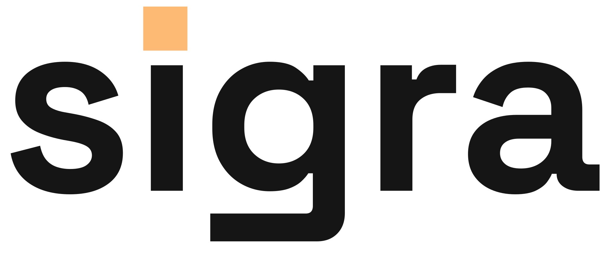

A1
Rail-i Typemark
Space Grotesk Bold with the i tittle replaced by an ember rail block and the g tail extended leftward — the wordmark is the complete identity.


Phoenix auth that ships
Phoenix auth that ships
32px
24px
16px
Strength: two structural edits (block tittle, extended tail) make the word proprietary without hurting legibility anywhere.
Risk: the ember block is small at 16px; the favicon leans on the ig crop silhouette.
Appeal
Distinctive
Concept
Tests whether two restrained letterform edits carry a full identity with no separate mark.